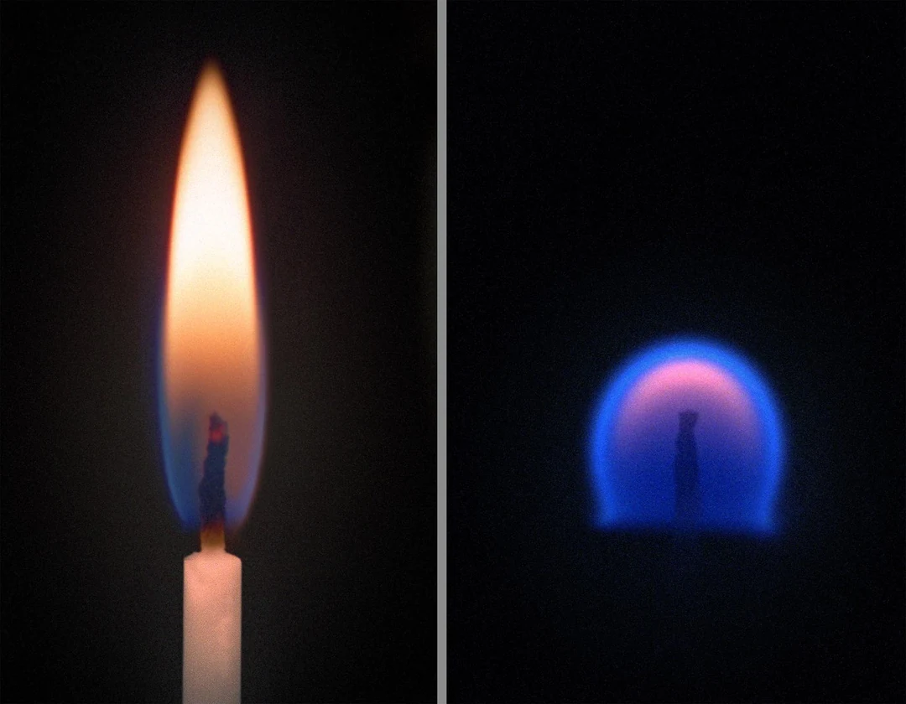
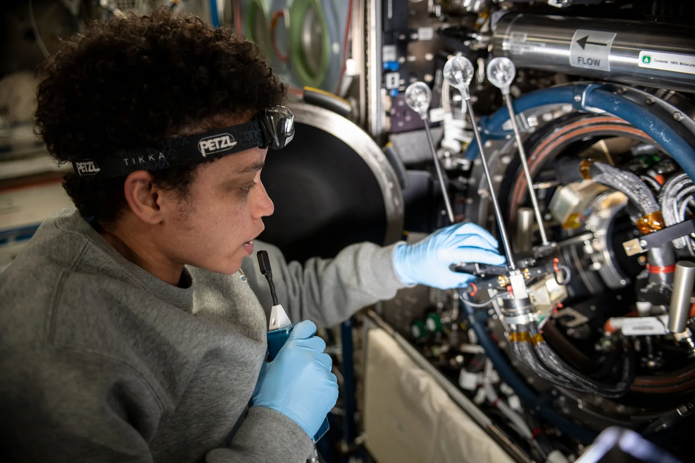

What the flight tests cover
Flight runs in the lunar cabin range

Spaceflight combustion archive
Fuel, airflow and cabin pressure shape how fire spreads in a spacecraft. Explore what NASA measured on orbit.

Oxygen Pressure

Choose a cabin atmosphere and materials to see which fire-safety questions the flight records cover. Each grade links to the tests behind it.
Circles group runs by fuel type and nearby ambient oxygen and pressure. Select a circle for the measured range. The solid rectangle marks the cabin window. Counts use each run’s recorded conditions.
Each row describes one run. Separate columns give ambient oxygen and burner oxidizer oxygen. Other fields include pressure, fuel, diluents, droplet size, airflow and outcome. The column notes document units and missing values.
Filter by fire prevention, detection or suppression. Open a finding for its evidence, limitations, proposed action and sources. The ranking uses the project’s scores and the weights below.
Finding summaries were drafted with SI. The build checks numbers against NASA’s tables and quotations against their sources.
Measurements from BASS-II flight video and a droplet-extinction model trained on FLEX test runs.
Side-view frames from the International Space Station. The blue line marks the flame front detected by the tracking code. NASA flight record PSI-25
NASA’s accounts of flight incidents and ground tests, with their effects on cabin design, material selection and fire response.
Sources, units, scoring rules, validation and the limits of the flight records.